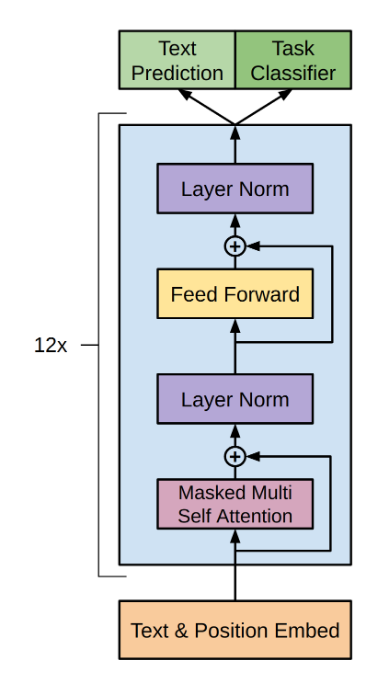

How deep is the machine?
The Artificial Curiosity Series
The GPT-3 Architecture, on a Napkin
The goal for this page is simple: build a detailed understanding of the GPT architecture. As a starting point, the original transformer and GPT papers provide us with the following diagrams:
Not bad as far as diagrams go, but if you're like me, not enough to understand the full picture. So let's dig in!
In / Out
Before we can understand anything else, we need to know: what are the inputs and outputs of GPT?
The input is a sequence of N words (a.k.a tokens). The output is a guess for the word most likely to be put at the end of the input sequence.
That's it! All the impressive GPT dialogues, stories and examples you see posted around are made with this simple input-output scheme: give it an input sequence – get the next word.
Not all heroes wear -> capes
Of course, we often want to get more than one word, but that's not a problem: after we get the next word, we add it to the sequence, and get the following word.
Not all heroes wear capes -> but
Not all heroes wear capes but -> all
Not all heroes wear capes but all -> villans
Not all heroes wear capes but all villans -> do
repeat as much as desired, and you end up with long generated texts.
Actually, to be precise, I need to correct the above in two aspects.
1. The input sequence is actually fixed to 2048 words (for GPT-3). We can still pass short sequences as input: we simply fill all extra positions with "empty" values.
2. The GPT output is not just a single guess, it's a sequence of guesses (of size 2048). One for each 'next' position in the sequence. But when generating text, we typically only look at the guess for the last word of the sequence.

That's it! Sequence in, sequence out.
Encoding
But wait a second, GPT can't actually understand words. Being a machine-learning algorithm, it operates on vectors of numbers. So how do we turn words into vectors?
The first step is to keep a vocabulary of all words, which allows us to give each word a value. Aardvark is 0, aaron is 1, and so on. (GPT has a vocabulary of 50257 words).
As a result, we can turn each word into a one-hot encoding vector of size 50257, where only the dimension at index i (the word's value) is 1, and all others are 0.

Of course, we do this for every word in the sequence,

Which results in a 2048 x 50257 matrix of ones and zeroes.
Embedding
50257 is pretty big for a vector, and it's mostly filled with zeroes. That's a lot of wasted space.
To solve this, we learn an embedding function: a neural network that takes a 50257-length vector of ones and zeroes, and outputs a n-length vector of numbers. Here, we are trying to store (or project) the information of the word's meaning to a smaller dimensional space.
For example, if the embedding dimension is 2, it would be like storing each word at a particular coordinate in 2D space.
Another intuitive way to think about it is that each dimension is a made-up property, like "softness", or "shmlorbness", and given a value for each property we can know exactly which word is meant.
Of course, the embedding dimensions are typically larger than 2: GPT uses 12288 dimensions.
In practice, each word one-hot vector gets multiplied with the learned embedding network weights, and ends up as a 12288 dimension embedding vector.
In arithmetic terms, we multiply the 2048 x 50257 sequence-encodings matrix with the 50257 x 12288 embedding-weights matrix (learned) and end up with a 2048 x 12288 sequence-embeddings matrix.

From now on, I will draw 2D matrices as small little blocks with the dimensions written next to them. When applicable, I separate the matrix lines to make it clear that each line corresponds to a word in the sequence.
Also note that due to how matrix multiplication works, the embedding function (a.k.a the embedding weight matrix) is applied to each word encoding (a.k.a row in the sequence-encodings matrix) separately. In other words, the result is the same as passing each word encoding vector separately to the embedding function, and concatenating all the results at the end. So: this far in the process, there is no information flowing across the sequence.
Positional Encoding

Attention (Simplified)


Multi-Head Attention

Add & Norm

Feed Forward

Decoding


Full Architecture